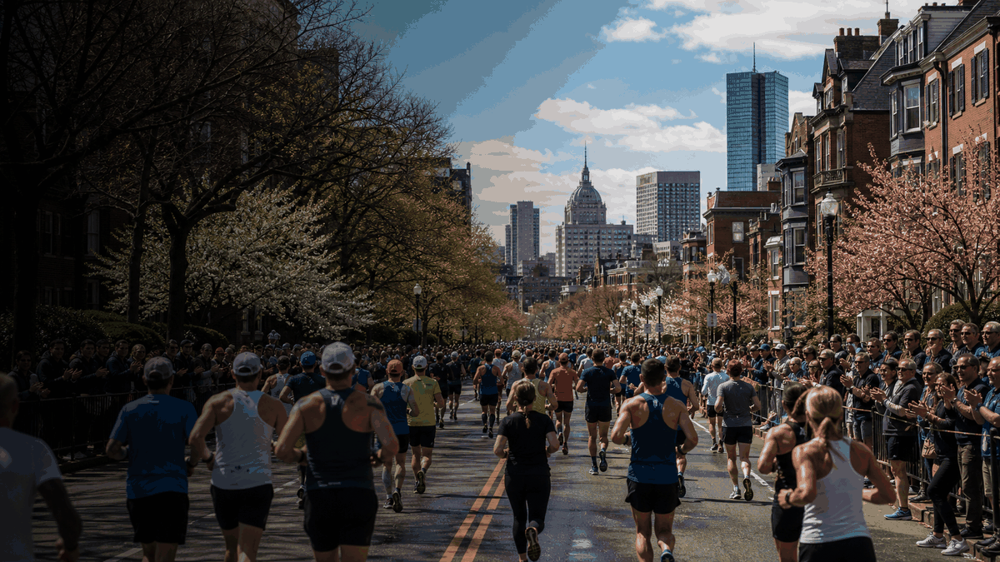
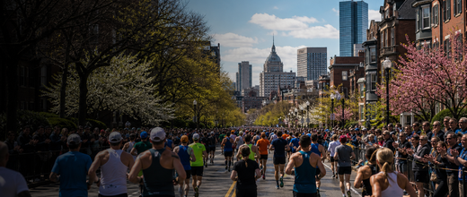

Marathon event guide
Boston Marathon
A compact OneSliders guide to Boston Marathon: what it is, how the current edition works and which stages matter most.

More MarathonInterested in more Marathon?Explore related events, places and calendar moments.
Boston Marathon is tracked as an evergreen event so the general guide stays stable while the year slide changes over time.
The year slide holds dates, place and practical questions. The stages slide breaks the event into the main visitor or viewing moments.
The general slide explains the event; the year slide carries selected-year dates, status and planning details.
- Selected editions belong on the year slide.
- Past editions can hold verified archive notes.
- Stages should be event parts, not generic page tabs.
Edition guide
Boston Marathon 2027
Choose an edition; only this slide changes.
Dates and programme details should be checked close to the event.
Dates are carried from the current OneSliders event index.
Host context: United States.
Check the organiser and city transport pages before travel.
Ticket windows and resale rules can change by edition.
Use the stages slide for the main parts of the event.
The general guide stays evergreen while this slide changes by edition.
Competition tracker
Boston Marathon
Schedule, live status, standings and final result in one compact sports view.